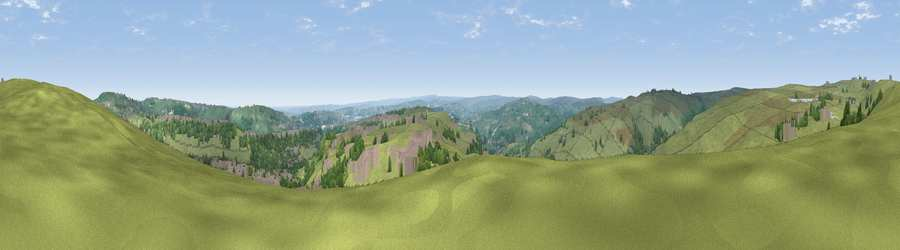

Viewpoint near Wainstalls
#13463 in England · top 19% of its area beats it · near Wainstalls · access?Where it is
The exact computed spot (SE 05025 28575). Click the marker for map links.
Public access: no public right of way or access land is recorded at this exact spot — it may be on private land. Computed from Natural England's CRoW access layer and OpenStreetMap rights of way — not the legal definitive map. Always verify locally.
The view, rendered

A 360° render of this exact spot computed from the terrain model, tree cover and land cover — summer colours, afternoon light, calibrated against photographs of famous viewpoints. Real trees, hedges and buildings will differ in detail.
The panorama
Grey silhouette: terrain skyline in each direction (720 bearings, Earth curvature and refraction included). Dashed green: skyline with trees (+15 m) and buildings (+8 m) as obstacles. Blue strip: how far the ground is visible on each bearing.
Where the view opens
Wedge length = distance to the farthest visible ground on that bearing (vegetation-aware). Rings at 10, 25 and 50 km.
What fills the view
74% grassland · 16% woodland · 9% built-up ·
Angular shares of the visible panorama (visual magnitude), not map area. Landscape diversity 0.33 (0–1 Shannon).
Key numbers
More beautiful places nearby
The staircase of upgrades: each row has a higher view potential than everything closer. Driving times are estimates from straight-line distance, calibrated against real road routing — check an actual route before setting out.
| Place | Direction | Drive | Score |
|---|---|---|---|
| Crow Hill | WSW · 3 km | ~7 min | 60.9 |
| Viewpoint near Chiserley | WSW · 4 km | ~9 min | 63.9 |
| Viewpoint near Thornton | NE · 4 km | ~9 min | 68.6 |
| Viewpoint near Stump Cross | ESE · 4 km | ~9 min | 71.5 |
| Rawdon Billing | NE · 20 km | ~34 min | 72.7 |
| Viewpoint near Otley | NE · 22 km | ~36 min | 77.5 |
| Darwen Hill | W · 38 km | ~57 min | 80.7 |
| White Brow | WSW · 42 km | ~62 min | 82.9 |
53.75352, -1.92527 · source: screening · position refined by local search. Computed location — check access rights before visiting.